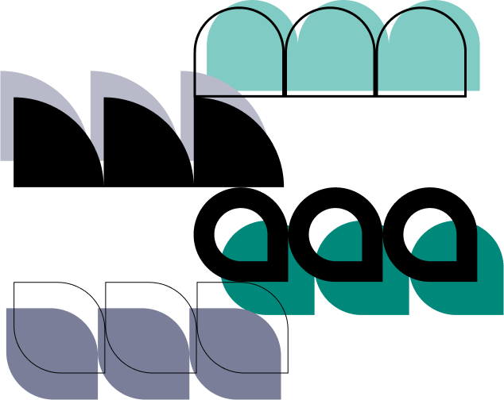
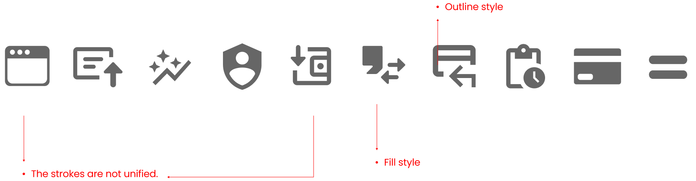
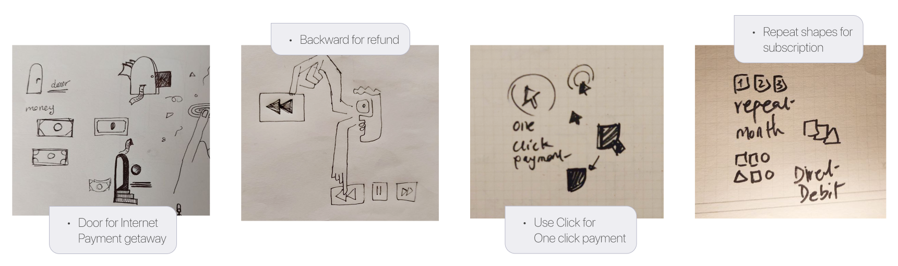
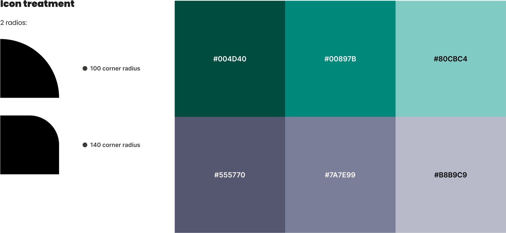
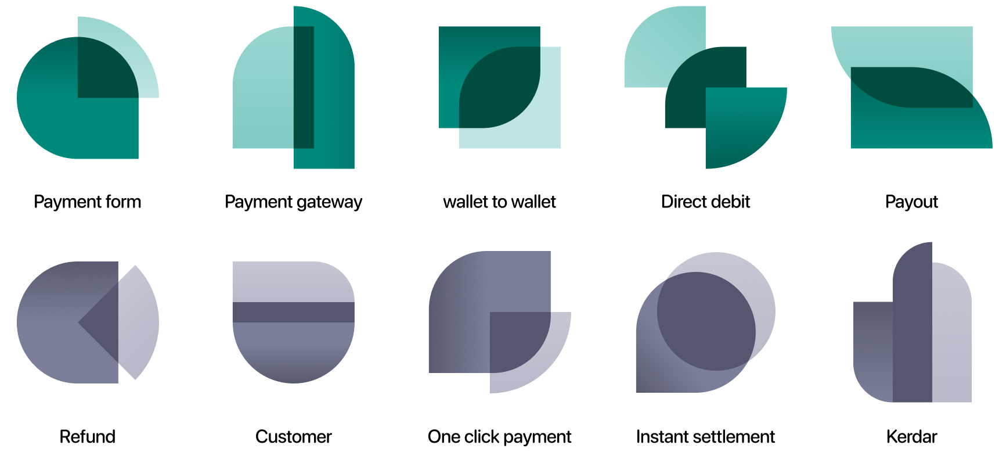
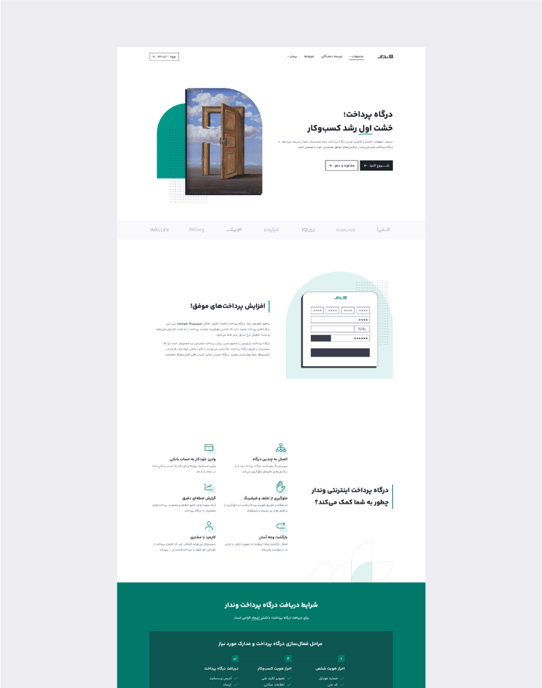

Overview
About project and Objective
Vandar, a B2B platform for payments and money management, underwent a complete
redesign after three years.
A refreshed logo and custom icon set aligned with the brand’s modern aesthetic,
enhancing clarity, usability, and memorability across the platform and marketing
materials.
Overview
Previous design

Ideate
Sketch
My idea was to think outside the box and avoid using images and elements similar to bank cards and money, instead opting for more creative concepts.

Skeleton
Principle
Icons serve as visual representations of our tools and services, making it crucial for them to align with our visual identity and maintain consistency. To achieve this, we use specific shapes in our icons. The chosen shape is a square with varying curves on each side, which helps create a distinctive and cohesive design that reinforces our brand’s identity.
Skeleton
Key line shape
Skeleton
Key line shape

Outcome
Product Icons

Outcome
Website
This icon set served as the foundation for the redesign concepts of the Vandar
website, particularly for the payment gateway page. As an example, I’ll share the
sample page here.
The product icons are featured in the hero section and have
the potential to be seamlessly integrated with the new images on the website,
enhancing the overall visual appeal and consistency.
